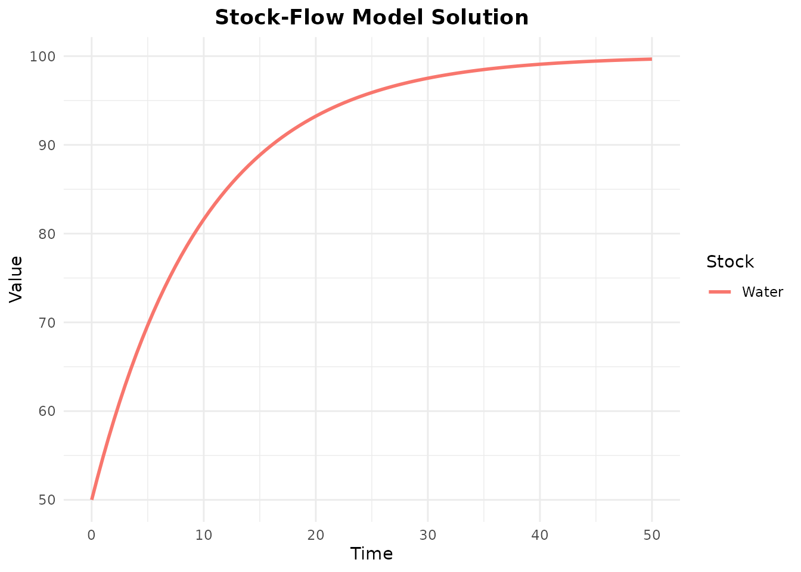

Introduction to openstockflow
Ian Moran
2025-12-27
Source:vignettes/introduction.Rmd
introduction.RmdOverview
openstockflow is the first R package to implement categorical stock-flow modeling using decorated cospans and functorial semantics. This approach, pioneered in the StockFlow.jl Julia package, enables compositional model building where complex systems are assembled from simpler components through categorical operations.
Key Features
- Compositional modeling: Build complex models from simple components
- Functorial semantics: Formal separation of diagram syntax from ODE semantics
- Dual API: Traditional pipe-based and algebraic categorical notation
- Integration: Seamless integration with deSolve for ODE solving
- Visualization: Multiple visualization options including ggraph and Graphviz
Installation
# Install from GitHub (when available)
# devtools::install_github("ianmoran/openstockflow")
# For now, load from source
library(openstockflow)Basic Concepts
Example 1: SIR Epidemic Model
The classic SIR (Susceptible-Infected-Recovered) model divides a population into three compartments.
Traditional API
sir <- stock_flow_diagram(reset_ids = TRUE) %>%
add_stock("S", initial = 999) %>%
add_stock("I", initial = 1) %>%
add_stock("R", initial = 0) %>%
add_flow("infection",
from = "S",
to = "I",
rate = function(inputs, params) {
params$beta * inputs$S * inputs$I / 1000
}
) %>%
add_flow("recovery",
from = "I",
to = "R",
rate = function(inputs, params) {
params$gamma * inputs$I
}
)
# View diagram structure
print(sir)
#> StockFlowDiagram
#> Stocks: 3
#> Flows: 2
#> Links: 4
#> Variables: 0
#> Sum variables: 0Algebraic API
The same model using categorical notation:
# Define stocks
S <- stock("S", initial = 999)
I <- stock("I", initial = 1)
R <- stock("R", initial = 0)
# Define flows
infection <- flow("infection",
rate = function(inputs, params) {
params$beta * inputs$S * inputs$I / 1000
}
)
recovery <- flow("recovery",
rate = function(inputs, params) {
params$gamma * inputs$I
}
)
# Build diagram using %->% and %+%
sir_alg <- S %+% I %+% R %+%
(S %->% infection %->% I) %+%
(I %->% recovery %->% R)
sir_diagram <- finalize(sir_alg, reset_ids = TRUE)Simulation
if (requireNamespace("deSolve", quietly = TRUE)) {
# Solve ODE system
result <- solve_diagram(
sir,
times = seq(0, 100, by = 1),
params = c(beta = 0.5, gamma = 0.1)
)
# View results
head(result)
# Plot solution
plot_solution(result)
}
#> Warning: Using `size` aesthetic for lines was deprecated in ggplot2 3.4.0.
#> ℹ Please use `linewidth` instead.
#> This warning is displayed once every 8 hours.
#> Call `lifecycle::last_lifecycle_warnings()` to see where this warning was
#> generated.
Example 2: SEIR Model with Population Conservation
The SEIR model adds an Exposed (E) compartment and uses a sum variable to track total population.
seir <- stock_flow_diagram(reset_ids = TRUE) %>%
add_stock("S", initial = 1000) %>%
add_stock("E", initial = 0) %>%
add_stock("I", initial = 1) %>%
add_stock("R", initial = 0) %>%
add_sum_variable("N", stocks = c("S", "E", "I", "R")) %>%
add_flow("infection",
from = "S",
to = "E",
rate = function(inputs, params) {
params$beta * inputs$S * inputs$I / inputs$N
}
) %>%
add_flow("progression",
from = "E",
to = "I",
rate = function(inputs, params) {
params$sigma * inputs$E
}
) %>%
add_flow("recovery",
from = "I",
to = "R",
rate = function(inputs, params) {
params$gamma * inputs$I
}
) %>%
add_link(from = "N", to = "infection") %>%
add_link(from = "I", to = "infection")
print(seir)
#> StockFlowDiagram
#> Stocks: 4
#> Flows: 3
#> Links: 8
#> Variables: 0
#> Sum variables: 1SEIR Simulation
if (requireNamespace("deSolve", quietly = TRUE)) {
seir_result <- solve_diagram(
seir,
times = seq(0, 200, by = 1),
params = c(beta = 0.5, sigma = 0.2, gamma = 0.1)
)
# Verify population conservation
total_pop <- seir_result$S + seir_result$E + seir_result$I + seir_result$R
cat("Population conservation:",
all(abs(total_pop - 1001) < 1e-6), "\n")
# Plot dynamics
plot_solution(seir_result)
# Phase plot
phase_plot(seir_result, "S", "I")
}
#> Population conservation: TRUE
Example 3: Stock and Flow with Inflows/Outflows
A water tank with constant inflow and proportional outflow.
tank <- stock_flow_diagram(reset_ids = TRUE) %>%
add_stock("Water", initial = 50) %>%
add_flow("fill",
from = NULL, # NULL indicates inflow from outside
to = "Water",
rate = function(inputs, params) {
params$inflow_rate
}
) %>%
add_flow("drain",
from = "Water",
to = NULL, # NULL indicates outflow to outside
rate = function(inputs, params) {
params$outflow_rate * inputs$Water
}
)
print(tank)
#> StockFlowDiagram
#> Stocks: 1
#> Flows: 2
#> Links: 2
#> Variables: 0
#> Sum variables: 0At equilibrium, inflow = outflow:
So:
if (requireNamespace("deSolve", quietly = TRUE)) {
tank_result <- solve_diagram(
tank,
times = seq(0, 50, by = 0.5),
params = c(inflow_rate = 10, outflow_rate = 0.1)
)
# Equilibrium should be 10 / 0.1 = 100
cat("Final water level:", tail(tank_result$Water, 1), "\n")
cat("Expected equilibrium:", 10 / 0.1, "\n")
plot_solution(tank_result)
}
#> Final water level: 99.6631
#> Expected equilibrium: 100
Example 4: Auxiliary Variables
Models can include auxiliary variables that depend on stocks or other variables.
# Model with intermediate computation
growth_model <- stock_flow_diagram(reset_ids = TRUE) %>%
add_stock("Population", initial = 100) %>%
add_variable("GrowthRate",
expression = function(state, params, var_values) {
# Growth rate decreases as population approaches carrying capacity
params$r * (1 - state["Population"] / params$K)
}
) %>%
add_flow("growth",
from = NULL,
to = "Population",
rate = function(inputs, params) {
inputs$GrowthRate * inputs$Population
}
) %>%
add_link(from = "GrowthRate", to = "growth") %>%
add_link(from = "Population", to = "growth")
print(growth_model)
#> StockFlowDiagram
#> Stocks: 1
#> Flows: 1
#> Links: 3
#> Variables: 1
#> Sum variables: 0Workflow Summary
The typical workflow with openstockflow is:
-
Define the model structure
- Stocks: state variables
- Flows: rate processes
- Variables: auxiliary computations
- Links: dependencies
-
Generate ODE system
ode_func <- generate_ode(diagram) -
Solve with deSolve
result <- solve_diagram(diagram, times, params) -
Visualize and analyze
plot(diagram) # Structure plot_solution(result) # Dynamics phase_plot(result, "X", "Y") # State space
Design Principles
Compositional by Design
Stock-flow diagrams are represented as functors, enabling:
- Local reasoning: Understand components independently
- Categorical composition: Combine models via decorated cospans
- Stratification: Refine models via pullbacks (e.g., by age, sex)
Mathematical Guarantees
Population Conservation
When modeling conserved quantities (like total population), sum variables ensure conservation:
diagram %>%
add_sum_variable("Total", stocks = c("S", "I", "R"))The ODE system automatically satisfies:
Equilibrium Analysis
At equilibrium, all derivatives are zero:
Use solve_diagram() to find equilibria numerically.
Performance Considerations
For large models:
-
Pre-compile: Generate ODE function once, reuse for multiple simulations
ode_func <- generate_ode(diagram) # Use ode_func multiple times with different params Vectorization: Flow rate functions should use vectorized operations
Sparse systems: Use appropriate ODE solver methods (future: compiled C code)
Next Steps
- Composition: Learn to compose models via decorated cospans (future vignette)
- Stratification: Refine models by age, sex, or other dimensions (future vignette)
- tidygraph integration: Work with diagrams as tbl_graph objects (future vignette)
References
Baez, J. C., Li, X., Libkind, S., Osgood, N., & Redekopp, E. (2022). “Compositional Modeling with Stock and Flow Diagrams.” arXiv:2205.08373.
Libkind, S., Baas, A., Halter, M., Patterson, E., & Fairbanks, J. (2022). “A Categorical Framework for Modeling with Stock and Flow Diagrams.” arXiv:2211.01290.
StockFlow.jl: Compositional Stock and Flow Modeling in Julia https://github.com/AlgebraicJulia/StockFlow.jl
Session Info
sessionInfo()
#> R version 4.5.2 (2025-10-31)
#> Platform: x86_64-pc-linux-gnu
#> Running under: Ubuntu 24.04.3 LTS
#>
#> Matrix products: default
#> BLAS: /usr/lib/x86_64-linux-gnu/openblas-pthread/libblas.so.3
#> LAPACK: /usr/lib/x86_64-linux-gnu/openblas-pthread/libopenblasp-r0.3.26.so; LAPACK version 3.12.0
#>
#> locale:
#> [1] LC_CTYPE=C.UTF-8 LC_NUMERIC=C LC_TIME=C.UTF-8
#> [4] LC_COLLATE=C.UTF-8 LC_MONETARY=C.UTF-8 LC_MESSAGES=C.UTF-8
#> [7] LC_PAPER=C.UTF-8 LC_NAME=C LC_ADDRESS=C
#> [10] LC_TELEPHONE=C LC_MEASUREMENT=C.UTF-8 LC_IDENTIFICATION=C
#>
#> time zone: UTC
#> tzcode source: system (glibc)
#>
#> attached base packages:
#> [1] stats graphics grDevices utils datasets methods base
#>
#> other attached packages:
#> [1] magrittr_2.0.4
#>
#> loaded via a namespace (and not attached):
#> [1] crayon_1.5.3 vctrs_0.6.5 cli_3.6.5 knitr_1.51
#> [5] rlang_1.1.6 xfun_0.55 generics_0.1.4 S7_0.2.1
#> [9] textshaping_1.0.4 jsonlite_2.0.0 deSolve_1.40 labeling_0.4.3
#> [13] glue_1.8.0 htmltools_0.5.9 ragg_1.5.0 sass_0.4.10
#> [17] scales_1.4.0 rmarkdown_2.30 grid_4.5.2 tibble_3.3.0
#> [21] evaluate_1.0.5 jquerylib_0.1.4 fastmap_1.2.0 yaml_2.3.12
#> [25] lifecycle_1.0.4 compiler_4.5.2 dplyr_1.1.4 RColorBrewer_1.1-3
#> [29] fs_1.6.6 pkgconfig_2.0.3 farver_2.1.2 systemfonts_1.3.1
#> [33] digest_0.6.39 R6_2.6.1 tidyselect_1.2.1 pillar_1.11.1
#> [37] bslib_0.9.0 withr_3.0.2 tools_4.5.2 gtable_0.3.6
#> [41] pkgdown_2.2.0 ggplot2_4.0.1 cachem_1.1.0 desc_1.4.3